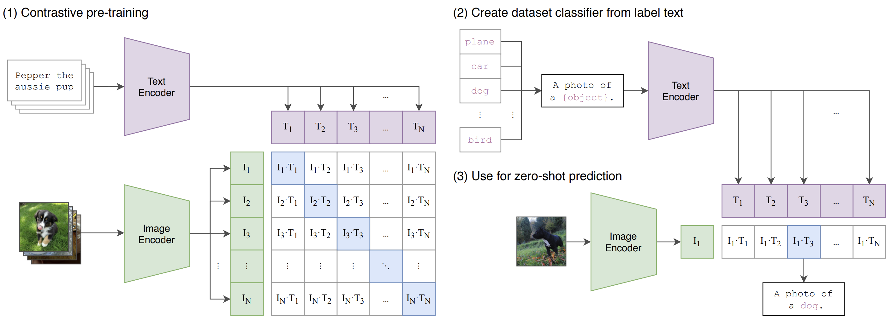

Overview and Key Idea
This post is my take on CLIP: Learning Transferable Visual Models From Natural Language Supervision (Radford et al., 2021). In my opinion, the core insight is beautifully simple: train an image encoder and a text encoder jointly so that matched image–text pairs are close in a shared embedding space, and everything else is pushed apart. Then, at inference, you can do zero-shot classification by comparing an image embedding to text prompts describing classes. I think this reframing of supervision—from category labels to natural language—was a genuine step change in vision.
Contrastive Objective
CLIP uses a symmetric contrastive loss over a batch of size \(N\). Let \(v_i = f_\text{img}(x_i)\) be image embeddings and \(t_i = f_\text{text}(y_i)\) be text embeddings for paired samples \((x_i, y_i)\). After \(\ell_2\)-normalization and a learnable temperature \(\tau\), similarities are \(s_{ij} = \langle v_i, t_j \rangle / \tau\). The loss is the average of two cross-entropies:
\[ \mathcal{L} = \frac{1}{2}\Bigg( \underbrace{\frac{1}{N} \sum_{i=1}^{N} \! -\log \frac{\exp(s_{ii})}{\sum_{j=1}^{N} \exp(s_{ij})}}_{\text{image} \to \text{text}} \; + \; \underbrace{\frac{1}{N} \sum_{i=1}^{N} \! -\log \frac{\exp(s_{ii})}{\sum_{j=1}^{N} \exp(s_{ji})}}_{\text{text} \to \text{image}} \Bigg). \]I like this formulation because it treats both retrieval directions symmetrically, which stabilizes training and improves generalization.
Architecture
CLIP uses a dual-encoder design: an image encoder (ResNet/ViT) and a text encoder (Transformer) mapped into a shared embedding space, trained with a symmetric contrastive loss. Below is the paper’s high-level diagram (as I read it):

Data and Training Setup
In my view, two ingredients make CLIP work: scale and diversity. The paper reports pretraining on ~400M image–text pairs scraped from the web. Vision backbones include ResNet variants and Vision Transformers; the text encoder is a Transformer. Everything is trained end-to-end with the contrastive objective and prompt engineering is used at evaluation to phrase labels as sentences.
Zero-shot Inference
For zero-shot classification over classes \(\{c_k\}\), I build prompts like “a photo of a \(c_k\)” (the paper averages over multiple templates). Compute text embeddings \(t_k\) and compare to the image embedding \(v\) via cosine similarity. The predicted class is:
\[ \hat{k} = \arg\max_k \; \frac{\langle v, t_k \rangle}{\lVert v \rVert \, \lVert t_k \rVert}. \]I think the prompt engineering aspect foreshadows instruction tuning: language is the interface to visual concepts.
Results I Find Most Convincing
- Broad transfer: Zero-shot performance competitive with supervised baselines on many datasets, without fine-tuning.
- Compositionality: Natural language enables describing open-ended concepts beyond fixed label sets.
- Retrieval: Symmetric retrieval (image→text, text→image) emerges naturally from the objective.
Results from the Paper (Tables)
Below I summarize the key results reported in the paper, grouped by evaluation setting. For full numbers and per-dataset breakdowns, see the original paper: arXiv:2103.00020.
Zero-shot Image Classification
| Backbone | Setting | Dataset(s) | Outcome Summary |
|---|---|---|---|
| ResNet / ViT variants | Zero-shot | ImageNet (and variants) | Competitive with a supervised ResNet-50 without using ImageNet labels; strong transfer via prompts. |
| ResNet / ViT variants | Zero-shot | 30+ datasets (e.g., CIFAR-100, OxfordPets, Flowers, Food, SUN397, Caltech101) | Consistent zero-shot gains vs. chance and competitive with supervised baselines; benefits from prompt ensembles. |
Linear Probe Transfer
| Representation | Probe | Dataset(s) | Outcome Summary |
|---|---|---|---|
| CLIP image encoder | Linear classifier | ImageNet and standard transfer suites | Strong linear separability; linear probe narrows the gap to supervised training on many datasets. |
Image–Text Retrieval
| Task | Metric | Dataset(s) | Outcome Summary |
|---|---|---|---|
| Image→Text, Text→Image | Recall@K | Common benchmarks (e.g., Flickr/Coco) | Competitive retrieval without task-specific training due to shared embedding space and symmetric loss. |
Robustness and Distribution Shift
| Evaluation | Dataset(s) | Outcome Summary |
|---|---|---|
| Zero-shot under distribution shift | ImageNetV2, ImageNet-R, ImageNet-Sketch, etc. | Improved robustness compared to supervised ImageNet models; language priors aid generalization. |
Note: This section is a structured summary of the paper's reported results. For exact numeric scores, please refer to the tables and figures in the paper [link].
Limitations and What I’d Watch Out For
- Bias and spurious cues: Web data is messy; in my opinion, CLIP embeddings reflect societal biases and artifacts.
- Localization: The global embedding is not a substitute for fine-grained spatial grounding.
- Domain shift: Medical or scientific imagery often requires adaptation or careful prompting.
Optimization Notes
Temperature \(\tau\) controls the softness of the distribution. Lower \(\tau\) sharpens similarities, effectively increasing gradients for hard negatives. I think tuning \(\tau\) is crucial when batch composition changes.
\[ p_{ij}^{(I\to T)} = \frac{\exp(\langle v_i, t_j \rangle / \tau)}{\sum_{k} \exp(\langle v_i, t_k \rangle / \tau)}\,, \quad p_{ij}^{(T\to I)} = \frac{\exp(\langle t_i, v_j \rangle / \tau)}{\sum_{k} \exp(\langle t_i, v_k \rangle / \tau)}. \]Practical Tips I Use
- Average over multiple prompt templates; it reduces variance.
- Normalize embeddings and monitor \(\tau\); instability often shows up as exploding similarities.
- For niche domains, I prefer class-specific prompts with domain vocabulary.
Beyond CLIP
In my opinion, CLIP set the stage for instruction-following vision-language models (e.g., CLIP→ALIGN→BLIP→GPT-4V). The general recipe—contrastive pretraining + language interfaces—still underpins many modern systems.
Citation
Radford, A., Kim, J. W., Hallacy, C., et al. “Learning Transferable Visual Models From Natural Language Supervision.” arXiv, 2021. Available at https://arxiv.org/abs/2103.00020.